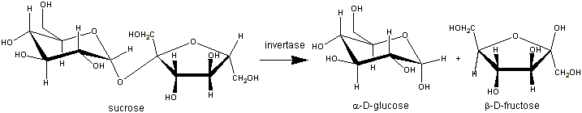

Enzyme Technology
Enzymes in the sucrose industry
The sucrose industry is a comparatively minor user of
enzymes but provides few historically significant and instructive examples of
enzyme technology The hydrolysis ('inversion') of sucrose, completely or
partially, to glucose and fructose provides sweet syrups that are more stable
(i.e., less likely crystallise) than pure sucrose syrups. The most familiar 'Golden Syrup' produced by acid hydrolysis of one of the less pure streams from
the cane sugar refinery but other types of syrup are produced using yeast (Saccharomyces
cerevisiae) invertase. Although this enzyme is unusual in that it suffers from
substrate inhibition at high sucrose levels ( > 20% (w/w)), this does not
prevent its commercial use at even higher concentrations:
 alpha-D-glucose + beta-D-fructose" width="717" height="140">
[4.2]
Traditionally, invertase was produced on site by
autolysing yeast cells. The autolysate was added to the syrup (70% sucrose
(w/w)) to be inverted together with small amounts of xylene to prevent microbial
growth. Inversion was complete in 48 - 72 h at 50°C and pH 4.5. The enzyme and
xylene were removed during the subsequent refining and evaporation. Partially
inverted syrups were (and still are) produced by blending totally inverted
syrups with sucrose syrups. Now, commercially produced invertase concentrates
are employed.
The production of hydrolysates of a low molecular weight
compound in essentially pure solution seems an obvious opportunity for the use
of an immobilised enzyme, yet this is not done on a significant scale, probably
because of the extreme simplicity of using the enzyme in solution and the basic
conservatism of the sugar industry.
Invertase finds another use in the production of
confectionery with liquid or soft centres. These centres are formulated using
crystalline sucrose and tiny (about 100 U kg−1, 0.3 ppm (w/w)) amounts of
invertase. At this level of enzyme, inversion of sucrose is very slow so the
centre remains solid long enough for enrobing with chocolate to be completed.
Then, over a period of days or weeks, sucrose hydrolysis occurs and the increase
in solubility causes the centres to become soft or liquid, depending on the
water content of the centre preparation.
Other enzymes are used as aids to sugar production and
refining by removing materials which inhibit crystallisation or cause high
viscosity. In some parts of the world, sugar cane contains significant amounts
of starch, which becomes viscous, thus slowing filtration processes and making
the solution hazy when the sucrose is dissolved. This problem can be overcome by
using the most thermostable a-amylases (e.g., Termamyl at about 5 U kg−1) which
are entirely compatible with the high temperatures and pH values that prevail
during the initial vacuum evaporation stage of sugar production.
Other problems involving dextran and raffinose
required the development of new industrial enzymes. A dextran is
produced by the action of dextransucrase (EC 2.4.1.5) from Leuconostoc
mesenteroides on sucrose and found as a slime on damaged cane
and beet tissue, especially when processing has been delayed in
hot and humid climates. Raffinose, which consists of sucrose with
a-galactose
attached through its C-1 atom to the 6 position on the glucose residue,
is produced at low temperatures in sugar beet. Both dextran and
raffinose have the sucrose molecule as part of their structure and
both inhibit sucrose crystal growth. This produces plate-like or
needle-like crystals which are not readily harvested by equipment
designed for the approximately cubic crystals otherwise obtained.
Dextran can produce extreme viscosity it process streams and even
bring plant to a stop. Extreme dextran problems arc frequently solved
by the use of fungal dextranases produced from Penicillium
species. These are used (e.g., 10 U kg−1 raw juice, 55°C,
pH 5.5, 1 h) only in times of crisis as they are not sufficiently
resistant to thermal denaturation for long-term use and are inactive
at high sucrose concentrations. Because only small quantities are
produced for use, this enzyme is relatively expensive. An enzyme
sufficiently stable for prophylactic use would be required in order
to benefit from economies of scale. Raffinose may be hydrolysed
to galactose and sucrose by a fungal raffinase (see
Chapter 5).
Home
| Back | Next
This page was established in 2004 and last updated by Martin
Chaplin
on
6 August, 2014
|